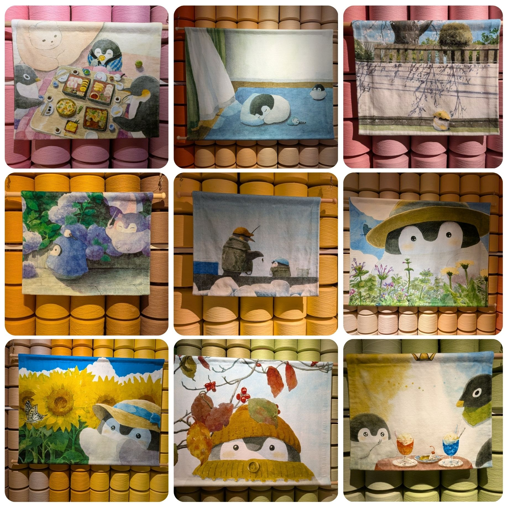

毛巾美術館
Towel Museum
「今治毛巾」是享譽全球的高品質毛巾，柔軟的觸感、優秀的吸水力以及耐用性皆備受肯定。 而毛巾美術館全球首座以毛巾為主題的美術館，宗旨是成為「療癒身心靈的珍藏之地」，來到愛媛當然要來這個毛巾美術館參觀一下，裡頭不僅詳細解說毛巾的製造過程，還展示了各種以毛巾為題材的藝術作品。
進入1樓大廳，馬上看到了用毛巾或線材製作的擺飾品，3樓的常設展也有類似的擺飾，非常可愛也非常符合這個場館的特色。
3樓的常設展用毛巾、布料跟線材製作了食物的擺飾，看起來相當美味呢。
3樓的常設展展示了一系列用來製作今治毛巾的機器，非常具有知識性呢。
3樓的常設展與嚕嚕米合作，用毛巾及布料製作嚕嚕米及家族的等身大布偶。
3樓的常設展展示了一間用線材裝飾而成的小屋，非常有趣。
コウペンちゃん 是插畫家るるてあ 於2017年在社群媒體上發表的企鵝寶寶插畫創作， 由於大受歡迎，還製作了一系列短篇動畫發布於Youtube上。這兩年在日本各地展開一系列的展覽，現在剛好輪到了今治的毛巾美術館，展期只到9月底。
展覽中展示了企鵝寶寶的創作誕生過程，以及所有發表過、未發表過的故事主題，當然也販售超多超可愛的週邊商品。
展示小企鵝各種模樣的布偶，超級可愛！
我們剛好在幾個月前在Youtube上看到了企鵝寶寶的動畫，當時就覺得牠超級可愛，沒想到居然在這裡遇到特展，二話不說馬上買票入場參觀。

展覽內容非常有誠意，展示了許多創作過程的原稿，也將許多可愛場景製作成立體模型和布偶，可愛度更高了！逛完展覽，掏出魔法小卡，把可愛的週邊統統都買回家！
店家資訊
- 店名： 毛巾美術館/タオル美術館
- 地址： 愛媛縣今治市朝倉上甲2930
- 電話： 0898-56-1515
留言板